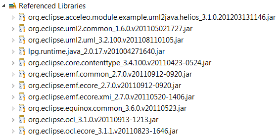
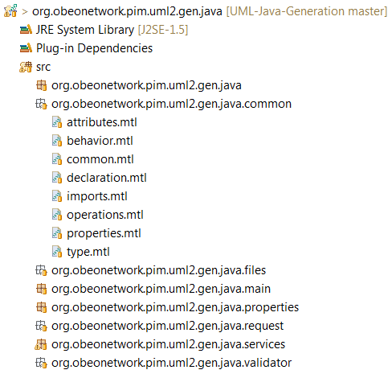
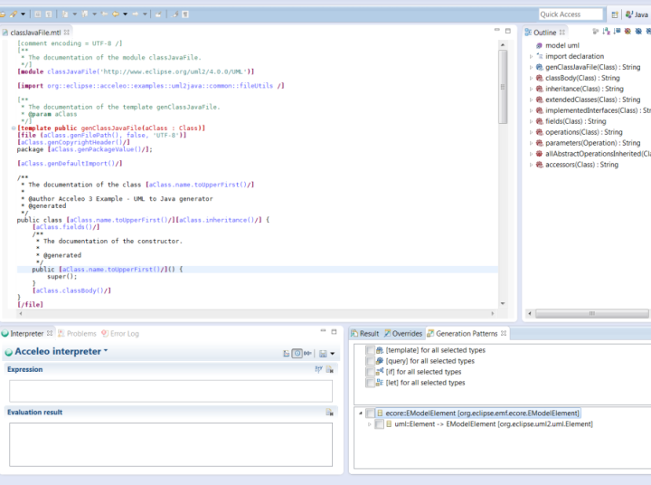
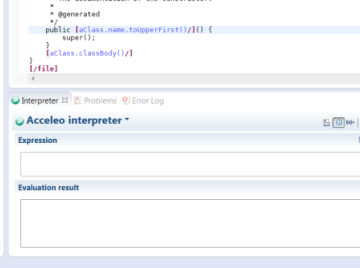
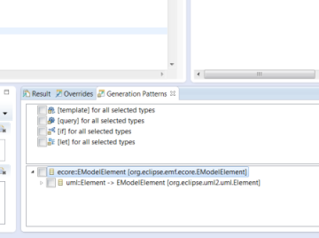
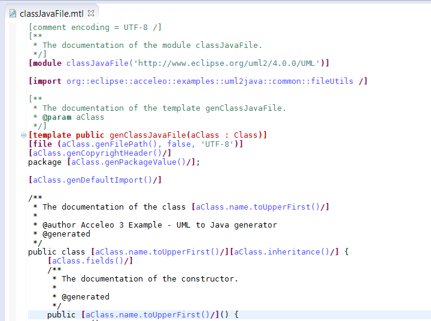

Domain Free generate anything from any EMF models
Any kind of EMF model...
Most code generators are either generating one kind of technology (e.g. Java) or using only one kind of models (e.g. UML). Acceleo does not restrict you to a specific domain, you want to generate code from:
- UML models? supported!
- Ecore models? supported!
- Meta-models in your workspace with dynamic instances (".xmi")? supported!
- A custom made meta-model? supported!
- A custom made meta-model with depencencies to UML? supported!
- UML models with profils? supported!
- Several custom made meta-models with depencencies from one to the other? supported!

{kind=link}
{kind=link}
Built with the tools of your choice...
Since Acceleo is based on the popular framework EMF, you can create your model with any kind of EMF based tool and use it as the input of your generation. You want to generate code from a model created with:
- The good ol' EMF tree based editor? supported!
- A graphical modeler? supported!
- A text based editor realized with Xtext? supported!
- A CDO based application used to create remote models? supported!
{kind=link}
{kind=link}
{kind=link}
{kind=link}
{kind=link}
To generate anything you want...
Now that you have your input model, what kind of technology do you want to generate? With its template based approach you can defined the kind of code generated, and you can customize it to respect your own style of coding. Do you want to generate:
- Java? supported!
- Scala? supported!
- Javascript? supported!
- HTML? supported!
- Python? supported!
Acceleo does not restrict the kind of code generated, there is only one rule:
If you can write it, Acceleo can generate it!
{kind=link}
{kind=link}
{kind=link}
Stand Alone get free of Eclipse
Launch your Acceleo generator from any Java based application!
- In the beginning, you will want to write quickly an efficient generator but once you'll be done, you will need to deliver it to your customers and for that you will have to build it and to embed it inside an application. If you are aiming to use your generator within Eclipse, Acceleo can create an Eclipse based UI to integrate your generator in an Eclipse instance and it also let you build easily you generator to use it as an Eclipse plugins but some of your end-users may need to use your generator out of Eclipse. For those use cases, Acceleo also supports the compilation and the launch of an Acceleo generator out of Eclipse. If you can call Java source code, you can launch an Acceleo generator.
- 
Eclipse Tooling integrated in your favorite IDE
Acceleo Project
-
When you want to start a code generation project with Acceleo, your first action is to create an Acceleo project. Inside of an Acceleo project, you can place Acceleo modules and the builder that comes with the Acceleo project will automatically compile the modules for you. The Acceleo project is also a container for several key preferences like the kind of serialization wanted for Acceleo modules or the severity of the error detection during the compilation.
- 
Acceleo Perspective
The Acceleo perspective defines the ideal workbench to work on an Acceleo generator. It contains at its center the Acceleo editor surrounded by several views dedicated to the edition of a code generator. You can find in the Acceleo perspective the following views:
- The "Package Explorer" view
- The "Outline" view
- The "Interpreter" view
- The "Problems" view
- The "Error Log" view
- The "Result" view
- The "Overrides" view
- The "Generation Patterns" view
Those view will let you test manipulate the files in your Acceleo project, test Acceleo expressions, have a look at the problems and errors found in your project, see the traceability of your generated code and use code generation design patterns.
- 
- 
- 
The Acceleo tooling features a code search system that let's you find out all the references to a selected template or query.
Acceleo Editor
The Acceleo editor is the center of the Acceleo tooling. It is associated with Acceleo modules (".mtl" files) and provides all the features of a modern programming editor to make you more productive when developing a code generator. As such, you can find in the Acceleo editor features like real time error detection, syntax highlighting, code completion, code navigation, a dynamic outline, etc.
- 
- You can also change the colors used by the Acceleo editor in the Acceleo preference menu available in the Window -> Preferences -> Acceleo menu.
Quick fixes
The Acceleo editor also features support for "quick fixes". Thanks to the "Ctrl+1" shortcut, you can have access to solutions to basic problems in a few seconds. Those quick fixes will let you for example define a new template or a new query to replace an unknown operation that you may be trying to call in your module.
Refactoring
The Acceleo tooling provides several refactoring tools to help you rename or move your modules, templates and queries within your project easily.
Java Services
Acceleo lets you use Java source code to compute complexe operation that may be impossible to realize using the Acceleo language. As such, you can be sure that you will be able to generate even the most complex requests.
In order to use a Java service, you need to use the Acceleo operation "invoke" in order to tell Acceleo to call your Java method and give you the result. Java services are limited to parameters and return value with the a type from one of the meta-models used in the generator or a "primitive type" (String, Integer, Real, Boolean, etc..).
Debug let's hunt bugs!
In order to catch bugs, Acceleo contains a debugger that can be used easily to monitor a generation and stop at user defined breakpoints. This debugger can let you move instructions by instructions in the execution of your module and you can even have a look at the state of your variable.
you can launch an Acceleo generator in debug by using the "Debug As..." menu to launch the generation instead of the "Run As..." menu. If you have launched the generation with the default "Acceleo Plug-in Application" launcher, the Acceleo modules will be debugged but if you use the advanced stand alone Java launcher, the Java code behind the curtain will be debugged.
Interpreter evaluate all your Acceleo expressions in real time
Starting with Acceleo 3.2.0, you are now able to find the Interpreter view in the Acceleo tooling. Thanks to this view, you can use the Acceleo language to test and evaluate directly Acceleo expressions without having to build and run a whole code generator. This view is also extensible and as such, you can contribute your own evaluation language very easily.
The interpreter is easily exitensible to let other person contribute their own language to use to manipulate EMF based elements.
Override static and dynamic override
With static override, you can easily re-use the content of an existing module and change a piece of its original behavior. Dynamic override is on a whole different level as it let you change the behavior of an existing generator by defining templates that will replace existing templates of the generator. This way, like with aspect oriented programming, you can patch an existing generator built, certified and deployed on your customers computer without having to change the original generator.
Traceability locate the origins of your generated code
One of the most important feature of Acceleo is its ability to compute the traceability of the generated code during the generation. Thanks to its traceability generation engine, you can have a look at the model elements and the part of your generator that have been used to generate every single pieces of text.
Incremental Generation protect your changes to the generated code
Acceleo let you define protected area to give your end users specific areas where they can modify the generated code. You can initialize those protected area with a default piece of code and let your user know that they can safely modify the code protected.
Acceleo also let you use JMerge for Java files to let you precisly determined thanks to documentation tags (@generated and @generate NOT) which features should be considered as user code and thus be protected from change during the next generation.
User Interface create an user interface for your generator in 30s
If you wish to integrate your Acceleo generator inside of Eclipse for your customers, so that they won't have to manipulate an Acceleo project, you can use a wizard provided by Acceleo to create a basic Eclipse user interface for your generator.
You can create this user interface project with the following instructions. Right click on an Acceleo generator and select File -> New -> Project -> Acceleo Model to Text -> Acceleo UI Launcher -> Next -> Next -> Next. There you can select the name of your generator, the kind of file that should be used for the generation (*.uml for an UML generator) and where the code will be generated, by default, it will be generated in a folder named "src-gen" located at the root of the project containing the input model.
Build continuous integration
Within Eclipse, an Acceleo project automatically builds your modules but you may want to have your Acceleo generators inside of a continuous integration system. In order to do that, Acceleo provides support for stand alone maven compilation that can be plugged easily inside any maven based build.